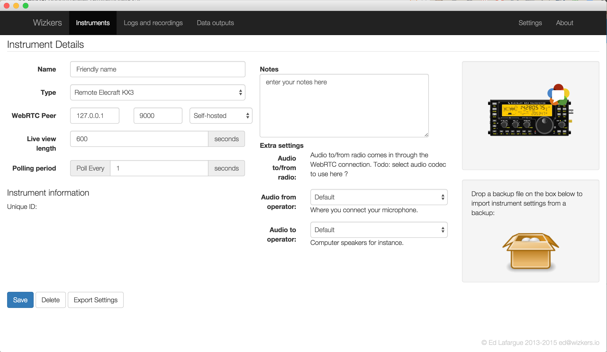

Elecraft remote KX3
The remote KX3 instrument is very similar to the standard KX3 instrument, with one very big difference: instead of connecting to a local KX3, this instrument will connect to a remote Wizkers instance over a WebRTC channel.
Full rig control as well as full duplex audio are supported.
Note: KX3 remote capabilities are very experimental and require a bit of manual setup in order to work properly. Contact us at info@wizkers.io for help if required.
Setting up Wizkers for KX3 remote control
Local end
The first requirement for using this instrument, is to have another Chrome instance of Wizkers running somewhere, and configured with a standard KX3 instrument.
On that first instance, you need to then enable a WebRTC output. Refer to the WebRTC output documentation for details on how to do this.
Once the KX3 and the WebRTC output are configured, simply connect the KX3. You are done on this end.
Remote end
On the remote end, things are a lot simpler: just create a Remote KX3 instrument. Most of the screen is similar to any other instrument, with the following differences:
- WebRTC Peer needs to point to the call establishment server (see the WebRTC output doc for details on what this is).
- You should select the correct sound card inputs and outputs for the audio. Audio from the radio comes in from the WebRTC audio channel, what you are setting up here is local audio (your microphone and speaker/headphones, in other words).

Establishing a call
With the KX3 turned on and connected to the 'local end' Wizkers, you can now start Wizkers on the "remote end" device - which can be as simple as a low-end Chromebook, and press "Connect". You should see the KX3 display start to update, and you will be able to remotely control the KX3 in the same way you would with the local instance.
In order to start audio, press the "power" icon next to the waterfall. This will establish audio communications. You can now use the "XMIT" button on the KX3 faceplate to start talking. Be very careful about Audio feedback if you are not using headphones!